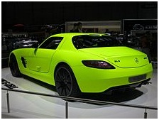

Mercedes-Benz SLS AMG "AMG Desert Gold"
It is a variant of SLS AMG Coupé with decorative features in shining chrome or Silver Shadow colours, black-painted AMG light-alloy wheels in size 9.5 x 19 at the front and 11.0 x 20 at the rear with a golden ring on the rim flange and a matte gold body colour dubbed "desert gold".
The vehicle was unveiled at the 2010 Dubai International Motor Show .
Australian International Motor Show
It is a one-off variant of the 2010 Mercedes-Benz SLS AMG Coupé with designo magno Night Black body colour with red highlights, ordered by Australian subsidiary for the Australian International Motor Show.
The vehicle was unveiled at the 2010 Australian International Motor Show

SLS AMG E-Cell (rear)
The drivable prototype is based on SLS AMG Coupé, but is powered by four electric motors that provide a combined 392 kW (533 PS; 526 hp) and 880 N⋅m (649 lb⋅ft). The battery is a 400 V lithium battery with a capacity of 48 kWh. Other features include pushrod damper struts, 402 x 39 mm front and 360 x 32 mm rear brake discs made of carbon fibre-strengthened ceramic, Full-LED headlamps, AMG 10-spoke light-alloy wheels with smooth-surfaced design, 265/35 R 19 (front) and 295/30 R 20 (rear) tyres, AMG Drive Unit angled towards the driver, sports seats made of quality nappa leather in a black/white colour combination, performance leather/alcantara steering wheel and the door linings, centre tunnel.
The battery was manufactured by Deutsche Accumotive GmbH & Co. KG, a joint venture between Daimler AG and Evonik Industries AG.The drivetrain has been in development since 2010 as a result of the cooperation between Mercedes-AMG and Mercedes AMG High Performance Powertrains in Brixworth.
The vehicle was unveiled in 2011 North American International Auto Show.
Mercedes-Benz SLS AMG roadster
The SLS AMG Roadster is a convertible variant of the SLS AMG Coupé, with conventional doors, three-layered fabric soft top (in magnesium/steel/aluminium construction) that opens and closes in 11 seconds, and can be operated on the move at up to 50 km/h (31 mph). The roadster's DIN kerb weight is 40 kg (88 lb) more than the SLS AMG Coupé. Certain reinforcements have been made to the roadster in order to compensate for the loss of roof which include side skirts with greater wall thicknesses and more chambers, dashboard cross-member is supported against the windscreen frame and centre tunnel by additional struts, a curved strut between the soft top and the tank reinforces the rear axle, a reinforcing cross-member behind the seats to support the fixed roll-over protection system. Other features include 265/35 ZR 19 front and 295/30 ZR 20 rear wheels, optional AMG Sepang brown body colour, optional weight-optimised forged wheels in a 10-spoke design in black with a high-sheen rim flange, optional AMG RIDE CONTROL sports suspension, 175 litres boot capacity, choice of 3 trims (leather, matte-finished solid metal, optional carbon-fibre), black designo leather upholstery, AMG sports seats with heating, a slot-in glass draught-stop, COMAND APS with DVD player, anti-theft alarm system with tow-away protection and interior monitoring, THERMOTRONIC luxury automatic climate control, KEYLESS-GO starting function, optional AIRSCARF ventilation at backrests of the AMG sports seats, leather-lined roll-over bars with integrated mesh in a "Silver Shadow" look with optional designo Exclusive leather, optional electrically folding exterior mirrors, optional Bang & Olufsen BeoSound AMG surround sound system, AMG Performance Media with high-speed mobile internet access (via Android operating system), optional Blind Spot Assist, optional AMG RIDE CONTROL sports suspension, 3-stage ESP with acceleration skid control, optional front AMG ceramic brake discs, AMG 7-spoke light-alloy wheels (optional 5-twin-spoke wheels, weight-optimised 10-spoke forged wheels), 265/35 R 19 front and 295/30 R 20 rear tyres, tyre pressure monitoring system.